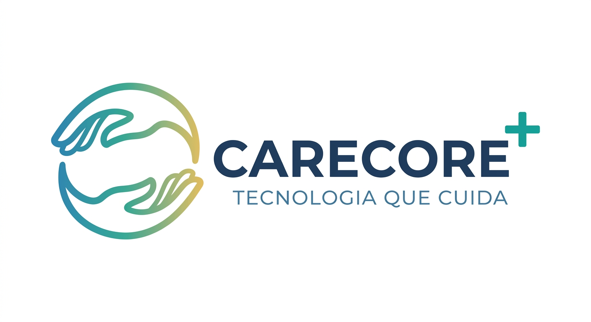

CARECORE+
Guia do sistema para o primeiro acesso e o dia a dia. Da criação da instituição ao controle de presença, rotina, acomodações, ocorrências, convênio SISA e relatórios — tudo passo a passo, com as telas reais do programa.
Cadastro & Equipe
instituição, master e perfis de acesso
Operação diária
portaria, refeições, itens e ocorrências
Gestão & Convênio
relatórios, evolução e repasse SISA